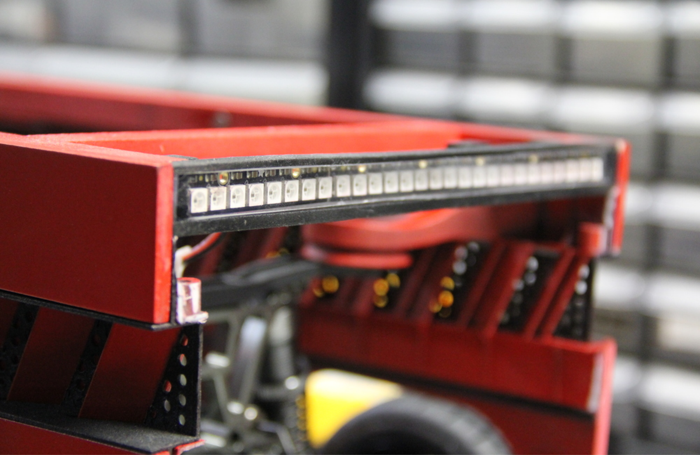

案例发生了什么
谁参与PUMA × J. Walter Thompson New York
发生节点 / 场景2016；跑步产品与训练工具发布；全球 / 训练场景
传播形式机器人 / 可视化配速 / 训练工具
传播核心让一台沿跑道飞驰的机器人精确复现目标配速，运动员不再追秒表，而是追一个真实移动的对手。
BeatBot 是一台可编程、沿田径跑道内圈白线行驶的配速机器人。团队将目标距离与时间输入控制系统后，机器人便以对应速度前进，跑者可以直接判断自己是在它前面还是后面。制作方称其最高速度可达约 30 英里/小时，并能模拟尤塞恩·博尔特 100 米世界纪录的配速。原本只能在计时器里看到的“目标速度”，被做成了一个会在身边移动的物理对手。
真实执行素材
以下图片来自权利方、球队、品牌、制作方或奖项原档；按执行链完整度灵活收录，不限制固定张数，逐图保留主源链接。


MARKETING KNOWLEDGE ROUTER · 营销知识路由器
营销启发卡
用同一套卡片把日常体育案例与世界杯案例、深度文章连起来。 卡片底部按主题连接全站相关案例、经典方法与深度文章。
01核心动作
把训练计划中的距离和目标时间转译为机器人的实时运动速度
把训练计划中的距离和目标时间转译为机器人的实时运动速度；让机器人沿跑道白线自动循迹，使运动员始终能在余光中获得位置反馈。
02传播与商业机制
数字实体化
数字实体化：配速不再是手表上的数字，而是一个有位置、有距离差的对手；工具即内容：机器人真实帮助训练，同时每一次追逐都能成为传播画面；纪录可体验：普通人可以直观看到世界纪录到底“有多快”。
03可复用的方法
把产品主张对应的抽象指标做成可感知的参照物
把产品主张对应的抽象指标做成可感知的参照物，让用户用身体而不是文字理解性能差距。
适用条件与风险
- 机器人在高速运行时必须与运动员保持安全距离，并处理循迹误差、电量和撞击风险。
- 制作方页面能证明装置与功能，但没有公开长期训练效果或产品销售贡献。
资料与来源
官方资料与原始来源
Manufactured2016 · BeatBot project打开原始来源 ↗
来源备注装置结构与速度说明来自制作方项目页；所谓训练成效与商业结果未见独立审计。